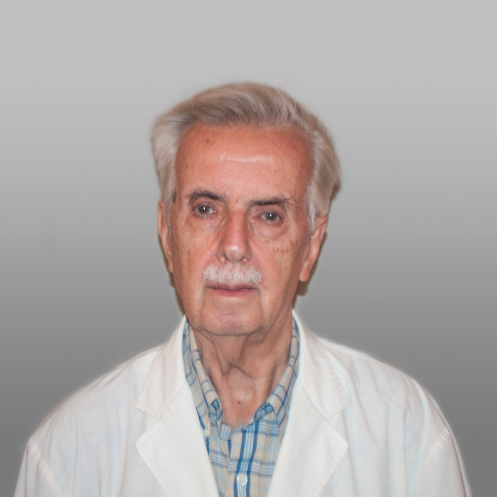

Me recibi de medico 2013 y desde entonces trabajo como oftalmologo. He realizado cientos de tratamientos con laser de argon y YAG para mis pacientes y me entrene en cirugia del segmento anterior como la de catarata y glaucoma. Estudio las causas de la miopia y su epidemia en las ciudades desde el 2014 y vengo publicando con un equipo internacional de especialistas en el tema. Atiendo la especialidad de pacientes que padecen glaucoma, una enfermedad que mal tratada puede llevar a perder la vision.
Dr. Leopoldo Despontin Iribarren
Me inicié en la Oftalmología haciendo reeducación visual con ejercicios para los niños con desviación de los ojos y mala visión. Luego desarrollé una amplia experiencia en las enfermedades de retina realizando estudios de angiofluoresceinografía en pacientes con retinopatía diabetic, patologia vascular de la retina y distintas maculopatías. Me dedico a la Oftalmología clínica con mas de 40 años de experiencia en la atención de pacientes con patología ocular.

Dr Rafael Iribarren
His research interests include mainly refractive errors, trying to understand the principal causes of lens prescription (myopia, hyperopia and presbyopia). Has performed prevalence studies of refractive error in Argentina. And has collaborated in the calculation of crystalline lens power for studies in different countries (Norway, China, Singapore, USA, India and Iran). Has been following both clinical and basic research on myopia for the last 20 years, and has began treatment in children and adolescents with progressive myopia using diluted atropine drops. Studies risk factors for myopia development, such as outdoor exposure and reading or computer use habits. Studies the contribution of crystalline lens power in myopia and hyperopia. Continues studying eye growth form infancy to adulthood, trying to understand how normal vision is achieved, or presbyopia and cataracts are developed.
Investiga en el área de los errores refractivos, especialmente en la miopía, la hipermetropía y la presbicia, las principales causas de uso de anteojos en la población. Ha realizado estudios de prevalencia de errores refractivos en Argentina. Ha colaborado con distintos estudios de otros países (China, Singapur, Noruega, USA, India e Irán) en el cálculo del poder del cristalino. Ha seguido de cerca durante los últimos 20 años las investigaciones epidemiológicas y de laboratorio sobre la miopía, y es pionero en el tratamiento de la miopía progresiva en niños y adolescentes con gotas de atropina diluidas. Estudia los factores de riesgo para el desarrollo de la miopía, tales como la cantidad de horas de exposición al aire libre y el uso contínuo de material de lectura y computadoras. Estudia la contribución que pudiera tener el cristalino en el desarrollo de la miopía y la hipermetropía. Sigue estudiando como se produce el correcto crecimiento del ojo desde la infancia hasta la vida adulta, tratando de entender como se establecen la visión normal, la presbicia y las cataratas.
Selected publications.
Chiappe JP, Nahum P, Casiraghi JF, Iribarren R. Prevalence of disc cupping in non- glaucomatous eyes. Medicina (B Aires). 2015;75(1):6-10. Iribarren R, Cortinez MF, Chiappe JP. Age of first distance prescription and final myopic refractive error. Ophthalmic Epidemiol 2009; 16: 84-9. Hashemi H, Iribarren R, Morgan IG, Khabazkhoob M, Mohammad K, Fotouhi A. Increased hyperopia with ageing based on cycloplegic refractions in adults: the Tehran Eye Study. Br J Ophthalmol. 2010;94:20-3. Iribarren G, Iribarren R, Torres M, Morgan IG, Choudhury F, Varma R. Lens Power in an Adult Population: The Los Angeles Latino Eye Study. ARVO 2010 E-abstract 1717. Iribarren G, Iribarren R. Prevalence of myopic shifts in patients seeking cataract surgery. Medicina (B Aires). 2013;73:207-212. Iribarren R, Midelfart Anna, Kinge B. Lens power loss in early adulhood. ACTA;2015 May;93(3):e233-4. Iribarren R, Morgan IG, Chan YH, Lin X, Saw SM. Changes in lens power in Singapore Chinese children during refractive development. Invest Ophthalmol Vis Sci 2012;53:5124-30.
Dr. Guillermo Iribarren
Realice la Residencia y Jefatura de Residencia del Hospital de Clínicas, luego siendo Jefe de Quirófanos en dicho Hospital por más de 10 años. Posteriormente me incorporé al Servicio de Oftalmologia del Hospital Aleman donde me desempeño como Jefe de Servicio.
Soy docente en la materia en la Universidad de Buenos Aires y he participado activamente en las actividades de organización de los Cursos Anuales y Congresos de la Sociedad Argentina de Oftalmología y del Consejo Argentino de Oftalmologia.
Soy Ex presidente de la Sociedad Argentina de Retina y Vitreo y actual Coordinador de la Campañas de Prevención de la Ceguera por Retinopatia Diabética del Consejo Argentino de Oftalmología.
Soy cirujano con experiencia amplia en cataratas, glaucoma, y retina. Especialmente me he dedicado a los Desprendimientos de Retina y las enfermedades de la Mácula.
Dra. Maria Agustina Borrone
Me recibí de Médica en la Facultad Medicina de la Universidad de La Plata y completé la residencia en oftalmología en la Clínica de Ojos Dr Nano. En el año 2015 fuí seleccionada para realizar un fellowship en córnea y segmento anterior en el instituto LV Prasad en Hyderabad, India, dónde viví un año y medio.
Actualmente me desempeño en diversas instituciones tanto públicas como privadas en CABA y Provincia de Buenos Aires realizando oftalmología general y superficie ocular, área en la cual también desarrollo actividades como investigadora clínica.
Dr. Mario Saravia
Médico Oftalmólogo especializado en Clínica y Cirugía de Retina y Vítreo. Experiencia clínico quirúrgica focalizada en retinopatia diabética y patología macular. Investigación Clínico-Farmacológica. Desempeño profesional asistencial y académico desarrollado en hospitales universitarios.
Me recibí de médico en 1996. Aprobé también los exámenes de reválida del título para EEUU, pero decidí quedarme aquí. Hice los exámenes de residencia para Oftalmología pudiendo elegir el Hospital de Clínicas, donde hice mi formación en la especialidad. Me dediqué a los fenómenos de inflamación del ojo en el servicio de Uveitis del Hospital hasta la fecha y estoy a cargo de la Seccion Uveitis del Hospital Universitario Austral. He publicado numerosos trabajos científicos en el área de las Uveitis y en numerosos ensayos clínicos de la especialidad.
Dr. Alejandro Armesto
Tras recibirme de médico inicié la residencia de oftalmología en el Servicio de Oftalmología del Hospital de Clínicas, UBA, y fuí luego Jefe de Residentes en el mismo Servicio, obteniendo un entrenamiento intensivo en cirugía de catarata e instruyendo a los residentes en diversas cirugías del segmento anterior del ojo. Durante ese período fuí además coordinador del Curso Superior de Médico Oftalmólogo dictado por la UBA. Posteriormente fuí fellow de Estrabismo y Oftalmopediatría en el Hospital de Clínicas por dos años y obtuve también el título de Médico Oftalmólogo al concluir el Curso Superior de la UBA. Actualmente sigo ejerciendo en el Servicio de Oftalmopediatría del Hospital de Clínicas ad honorem, formo parte del cuerpo docente de la Cátedera de Oftalmología, y soy médico de staff del Hospital Alemán.